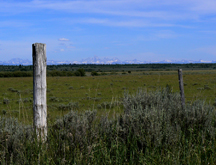
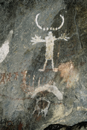

Eastern Idaho Photographic Society


©Roger Heng Oxbow Grand Teton National Park
The BLM permits livestock grazing on public; manages wildlife and plants;
manages wildernesses; and protects historic places on land it administers,
Idaho Bureau of Land Management
Idaho BLM Maps and Information
 |
 |  |
 |
Kilns near Leadore, Idaho |
Landscape |
Wild Horses |
Oregon Trail |
© Sue Heng 2008 |
© Chris Leavell 2008 |
© Roger Heng 2011 |
© Teak Cummings 2008 |
1 |
 |
 |  |
Sunset a Lemi Pass |
Prickly Pear Cactus |
Pictograph |
Teton Mountains from Idaho |
© Sue Heng 2008 |
© Roger Heng 2008 |
© Sue Heng 2008 |
© Chris Leavell 2008 |
Photo Locations and Other Links
National Parks| Monument and Reserve| Bureau of Land Management| National Forests| Near By Ghost Towns| Near By Wildlife Refuges| Weather| Sunrise/Sunset Times | Photographers/Photo Clubs
Photographs Copyright© Photographer, Owner, or Eastern Idaho Photographic Society. Photographs
may not be reproduced in any manner without written permission.
Web Page Copyright© 2011 Eastern Idaho Photographic Society